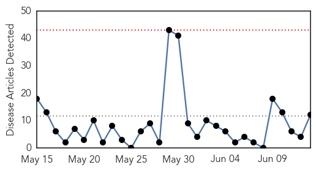
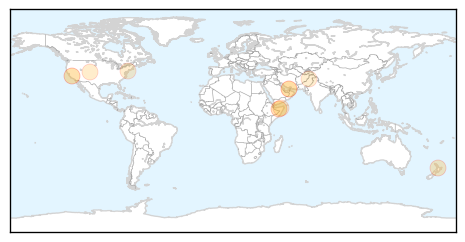
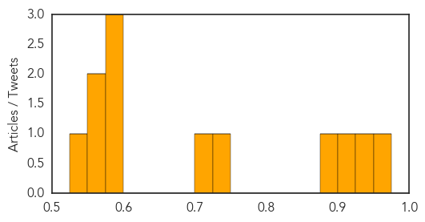

Measles
30-Day Web Trend
0 alerts, 0 warnings

30-Day Twitter Trend
0 alerts, 0 warnings

Article Locations
Article Confidences
Top Articles:
- 0.969
- Measles spread continues in Hamilton
- 0.948
- Saving Lives and $1 Billion Dollars in Health Care Costs Growing Your Baby
- 0.912
- Measles spreads to second school
- 0.876
- Somalia: UN agencies call for immediate action to curb measles outbreaks
- 0.740
- Otago Daily Times Online News : Otago, South Island, New Zealand & International News
- 0.710
- Aggressive measles outbreak in Waikato
- 0.599
- Craig briefs: CPW reminds people to not touch young wildlife
- 0.584
- UN steps up humanitarian aid in Iraq
- 0.576
- U.N. calls for greater focus on measles in Somalia
- 0.573
- Dead Whale Defaced by Fraternity Has Dolphin-Killing Virus : Life : Auto World News
- 0.571
- UN steps up humanitarian aid in Iraq
- 0.549
- Supporting Refugee Children in Pakistan in the Battle Against Measles - Pakistan
Top Tweets:
-
No tweets found for Jun 13, 2014
Hepatitis
30-Day Web Trend
3 alerts, 0 warnings

30-Day Twitter Trend
0 alerts, 0 warnings

Article Locations

Article Confidences

Top Articles:
-
No articles found for Jun 13, 2014
Top Tweets:
-
No tweets found for Jun 13, 2014